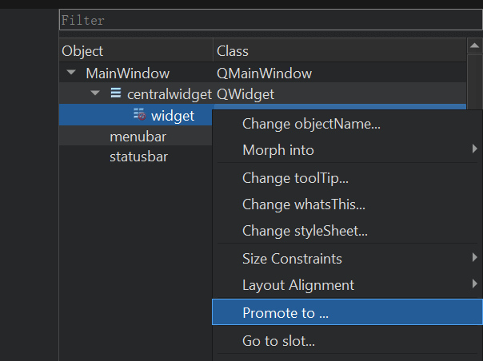
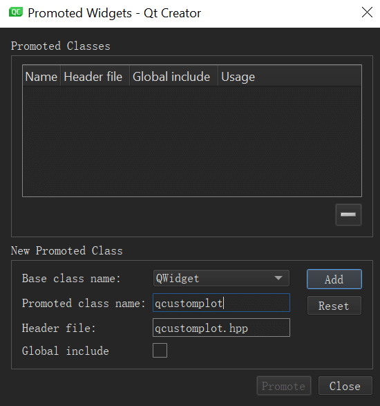

这篇文章上次修改于 692 天前，可能其部分内容已经发生变化，如有疑问可询问作者。
今天在项目中需要添加一个柱状图，但由于我们的项目是 QT 4.8 的所以不支持 QtCharts。查询了下发现有 QCustomPlot 可以完美的实现需求，使用方法也很简单。
官网：https://www.qcustomplot.com/
下载：https://www.qcustomplot.com/index.php/download
QCustomPlot 只有两个文件 qcustomplot.cpp 和 qcustomplot.h，将其复制到项目目录中并添加到项目中。然后引用头文件即可：
#include "qcustomplot.h"
我们需要在 ui 中添加一个 widget 然后右键点击控件，选择提升：

提升的 class 名称修改为 QCustomPlot：

点击 add 然后点击 promote 即可。
编译后可以看到图表样式：
在使用中如果需要根据数据变化刷新渲染的图形，记得在修改数据后调用
没有评论